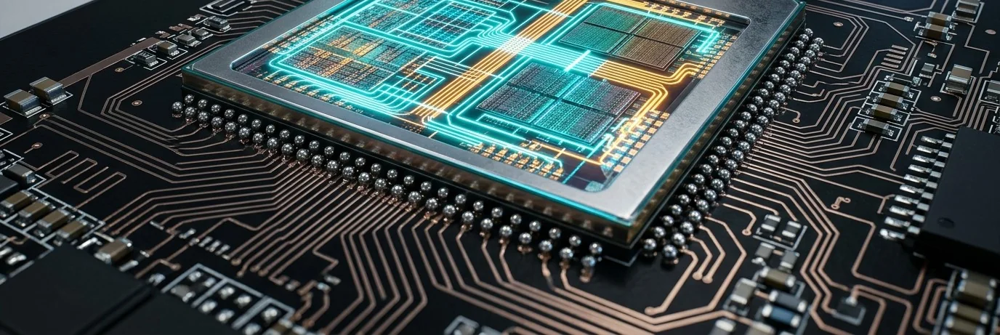
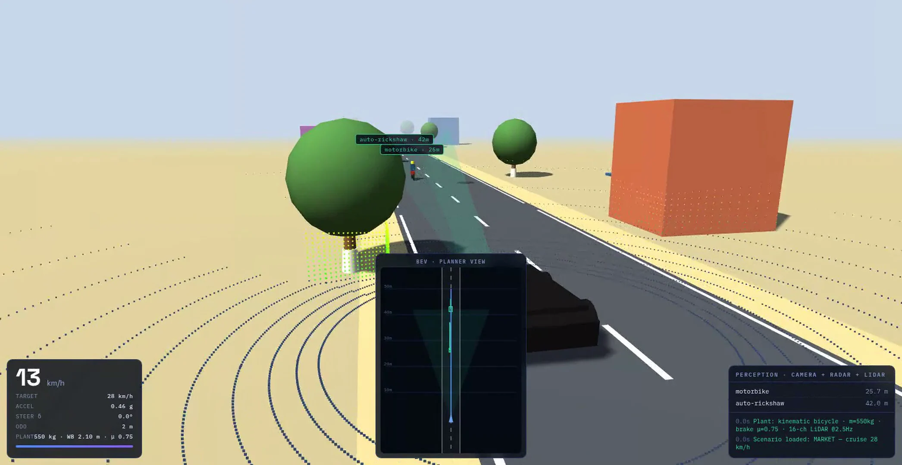

AD2 Smart Truck kit
Six cameras, two radars, LiDAR and drive-by-wire on an N2/N3 truck, certified to AIS-162 and 188. Fleet ROI under two years on insurance premium reduction alone.
ASP₹2.5LFY2032₹450 Cr
Six functional blocks on one 28 nm automotive die, taped out in gated stages, sold as fifteen products into a market where the demand date is written into law.
₹1,128 Cr of FY2032 revenue rests on one tapeout. That is the whole investment case, and the whole risk.
India is putting ADAS into law for commercial vehicles function by function, each with its own standard and its own date. Read at the standards level, the version that survives diligence, the schedule is fixed and public.
Four functions arrive on one clock. Every commercial-vehicle maker must source drowsiness, blind-spot, moving-off and lane-departure warning together, so a supplier carrying more than one of the four from a single perception core is materially easier to nominate than four separate suppliers. That, rather than any single function, is the design-in argument.
Over 60% addressable by ADAS intervention.
Across 70M vehicles. The lowest of any major market.
N2/N3, new plus retrofit, on a model basis.

Seven RGB cameras, two thermal, and front and rear 4D 77 GHz radar fuse in 8.6 ms of a 33.3 ms frame. The compute is 32,768 MACs at 600 MHz, a derived 39.3 TOPS INT8, with 102.4 GB/s of dual-channel LPDDR5 behind it. Bandwidth, not TOPS, is what binds multi-camera fusion.
The headroom is the product strategy. A part that clears eleven channels in a quarter of its frame budget configures downward into a one-channel module, a mirror unit, a radar pod or a forklift kit without redesigning the compute.
57 mm² · TSMC 28 nm · six functional blocks
Point at a block, or use the arrow keys, to price what it carries
Six system products run on the die as a whole rather than on any single block. They are the mandate business, and they carry two thirds of the plan.
That gap is the honest centre of this round. What is being underwritten is not the ₹1,128 Cr terminal year. It is the two years in front of it.
Government and PSU channels ship first, where the gate is eligibility rather than an OEM safety case. The telemetry those units generate is what makes the Tier-1 design-in winnable later.
Run A for B, not A then B. Sequenced A then B, the data arrives too late to matter. Run A for B and the pre-silicon window becomes the thing that makes the post-silicon business winnable.

The fifteen lines reach market through genuinely different procurement motions. That is what keeps the concentration risk from being total.
Six cameras, two radars, LiDAR and drive-by-wire on an N2/N3 truck, certified to AIS-162 and 188. Fleet ROI under two years on insurance premium reduction alone.
Replacement mirror with display, four body cameras, a loom and a 15-minute fitment. No mandate applies. It sells as an accessory through fitment shops today and builds the channel the harder products inherit.
Forklifts and tugs a site already owns, retrofitted to drive themselves. Geofenced, 25 km/h ceiling, 5 cm obstacle stop. No homologation inside a private site, so L4 ships years before it is legal on a road.
The autonomous vehicle layer of container-terminal automation, sold as fleet operations rather than hardware. Electric, no fuel, 92% gross margin on the ops contract. Live at Vizag Container Terminal.
Humanoid, UGV and drone compute on the D100 secure enclave. AES-256, lockstep RISC-V, ECC SRAM. A sovereign procurement route that does not depend on the automotive mandate at all.
The core itself, licensed to an OEM rather than sold as a part. Starts FY2029 because a licence needs a track record. The only line in the plan with no bill of materials whatsoever.
No line in the plan exceeds 2% of its own demand pool.
1,38,150 units · ₹1,128.45 Cr